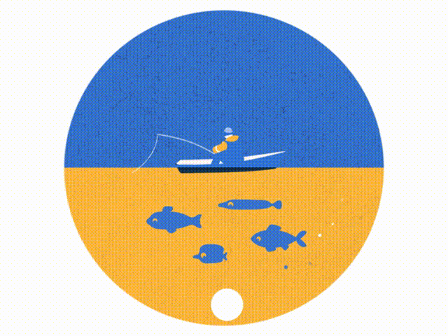

MT Crosby Weir - Click to view details
Caboolture River Weir - Click to view details
Bremer River - Click to view details
North Pine Dam - Click to view details
Somerset Dam - Click to view details
Wivenhoe Dam - Click to view details
Logan River - Click to view details
Albert River - Click to view details